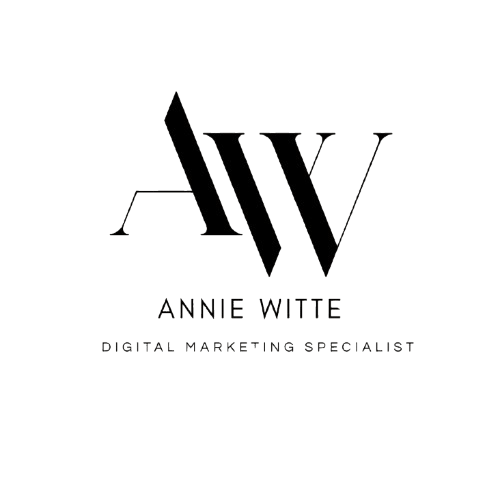
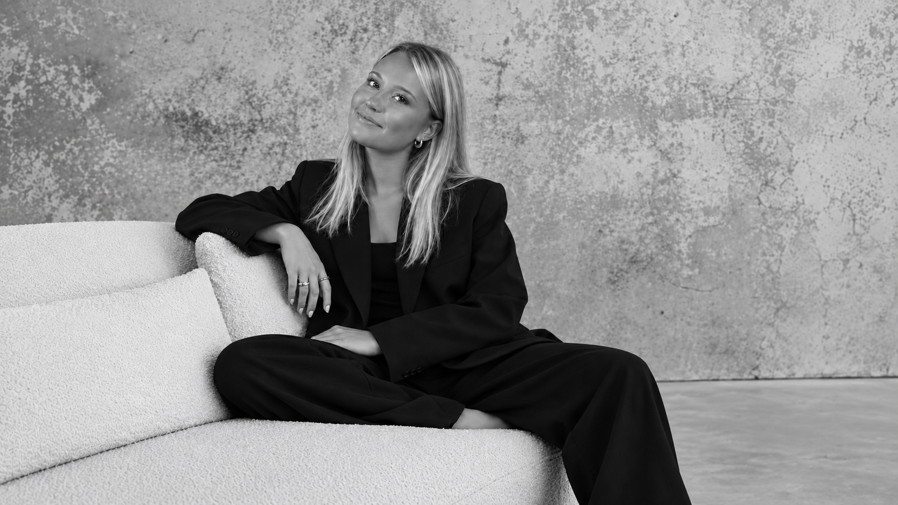

Lokal synlighet för ett kafé
Kursuppgift: plan för Google-profil och sökord för ett fiktivt kafé i Göteborg.


Jag utbildar mig till Digital Marketing Specialist på IHM Business School och har ett särskilt intresse för lokala företag.
Innan utbildningen arbetade jag i butik och såg hur mycket en bra Google-profil och ett tydligt erbjudande betyder för små företag. Nu lär jag mig verktygen för att hjälpa dem på riktigt.
IHM Business School – yrkeshögskoleutbildning med fokus på digital strategi, analys och modern marknadsföring.
Sökordsanalys, SEO, SEM, data och Google-profiler som driver mätbar synlighet och resultat.
Innehållsstrategi och kampanjer för sociala medier samt konverterande e-postflöden.
Kursuppgift: plan för Google-profil och sökord för ett fiktivt kafé i Göteborg.

Kursuppgift: pelare, kanaler och tolv inlägg för en hållbar kaffeprenumeration.

Handkodad med HTML, CSS och JavaScript, med AI som kodstöd.
Vill du veta mer? Mejla mig eller hör av dig på LinkedIn.